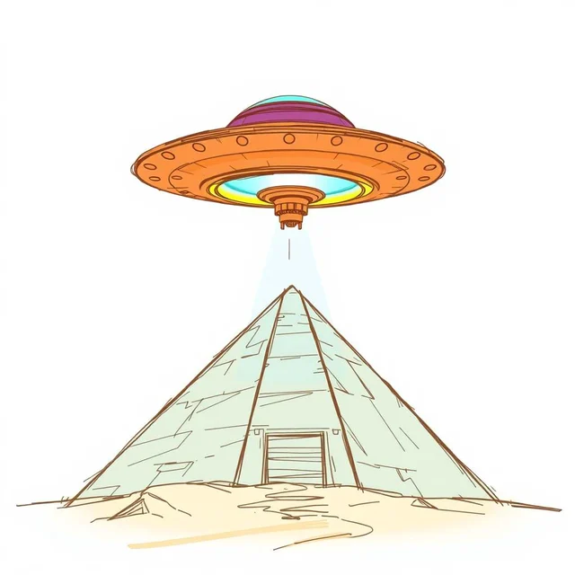
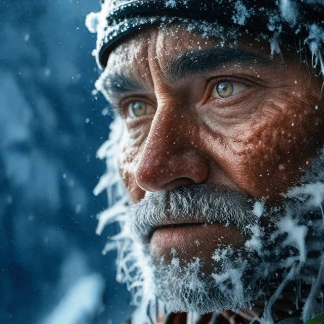
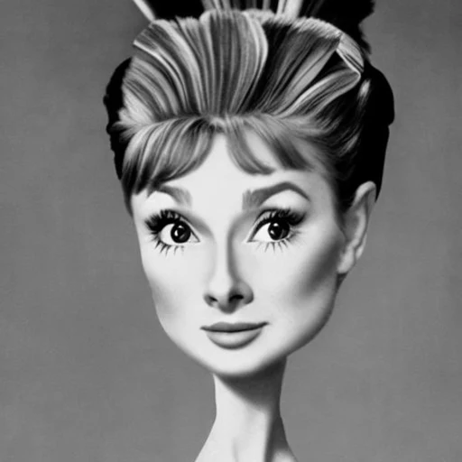

Dar-Yen Chen
Working on visual generation and few-step distillation.
A third-year doctoral candidate at SketchX, Centre for Vision, Speech and Signal Processing, University of Surrey, working with Prof. Yi-Zhe Song.
d.chen@surrey.ac.uk
Publications
-
Preprint2026
NitroFusion2: Bringing Adversarial Loss to the Text Stream of Multimodal Diffusion Transformers

-
NeurIPS2025

-
CVPR2025
NitroFusion: High-Fidelity Single-Step Diffusion through Dynamic Adversarial Training

-
CVPR2024

-
CVPR2024
ArtAdapter: Text-to-Image Style Transfer using Multi-Level Style Encoder and Explicit Adaptation